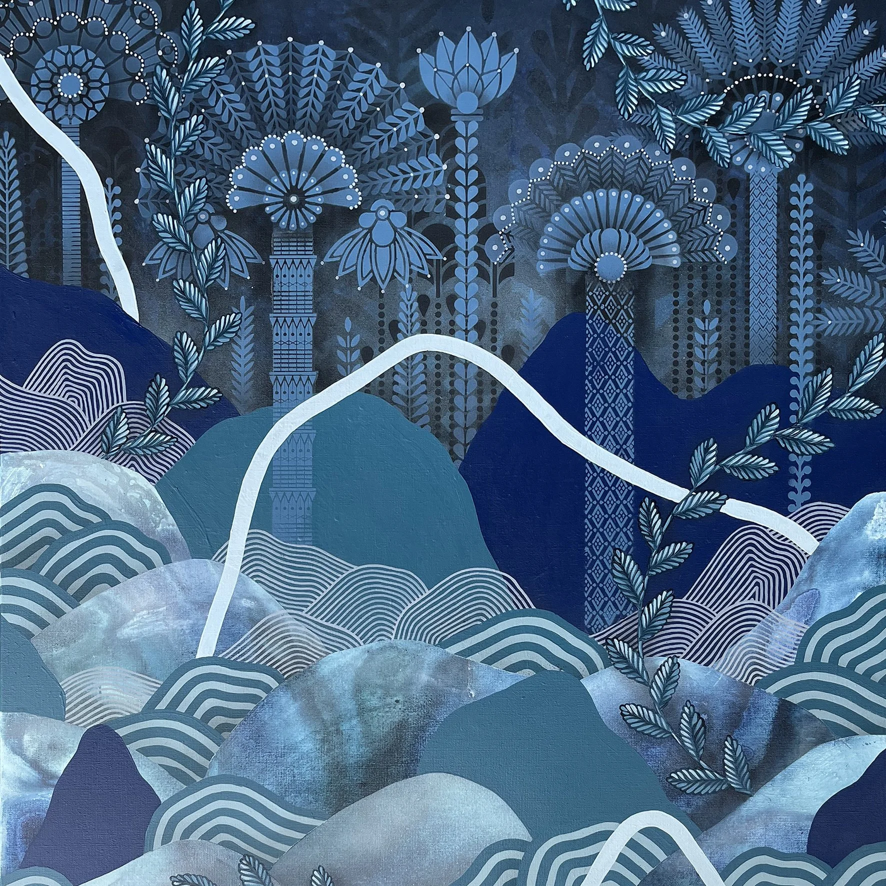
Artiste
Koralie
Ouvrir la fiche illustrée.
Le projet du square Thérèse et Léon Blum articule mobilité douce, valorisation paysagère, mémoire locale et action artistique participative. Il accompagne la piste cyclable par un parcours visuel coloré, végétal et protecteur, pensé comme une signalétique douce pour les usagers.
L’intervention vise à renforcer la lisibilité, l’attractivité et le sentiment de sécurité autour d’un espace très fréquenté par les enfants, les familles et les établissements scolaires voisins. La couleur, les motifs floraux et les formes inspirées de la nature prolongent l’identité végétale du square jusque sur ses abords.
Le projet associe également un volet patrimonial et citoyen autour de figures féminines liées à Narbonne, ainsi qu’une dimension participative avec les écoles, collèges, habitants, artistes et structures culturelles du territoire.
Cliquez sur une carte pour ouvrir une fiche illustrée en deux pages maximum.

Ouvrir la fiche illustrée.
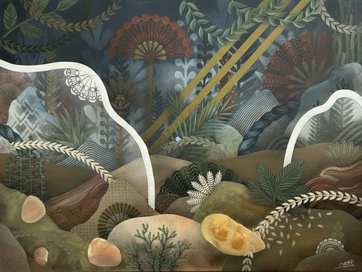
Ouvrir la fiche illustrée.
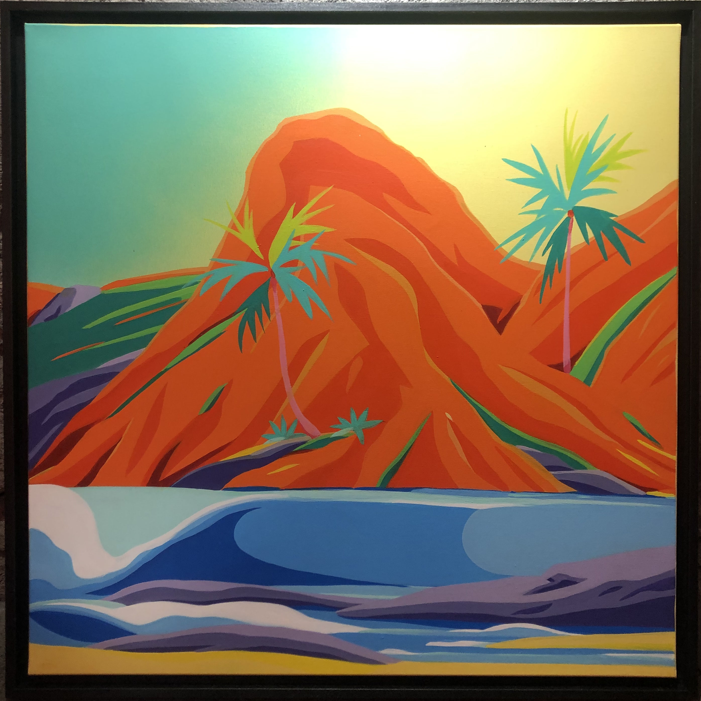
Ouvrir la fiche illustrée.
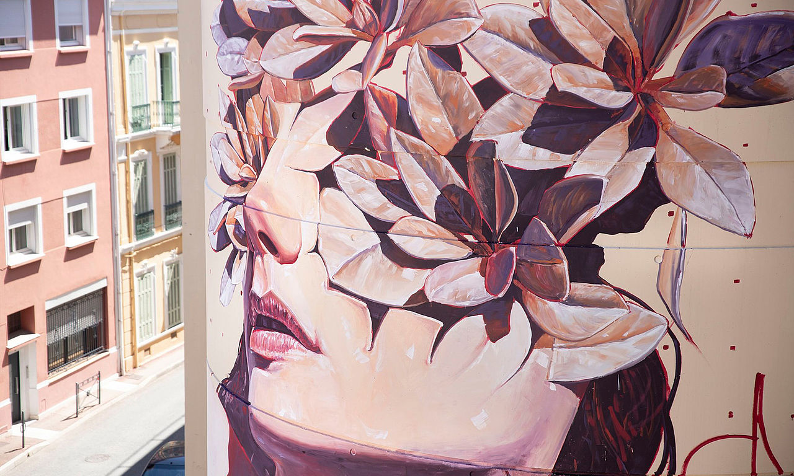
Ouvrir la fiche illustrée.
Cette section peut accueillir portraits, détails d’œuvres, figures féminines ou galerie thématique.
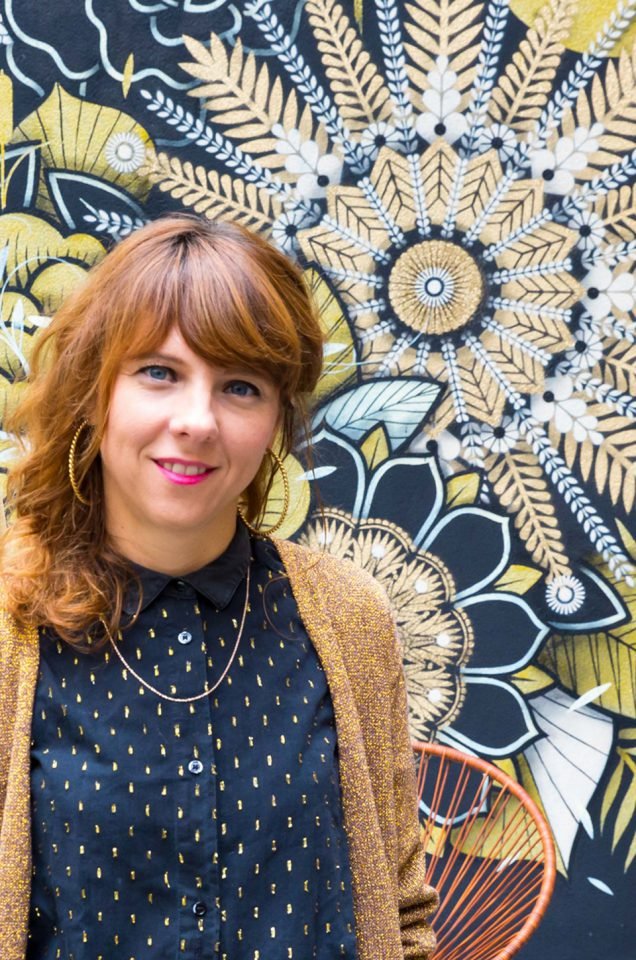
Texte court à remplacer.
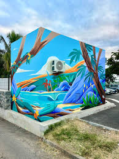
Texte court à remplacer.
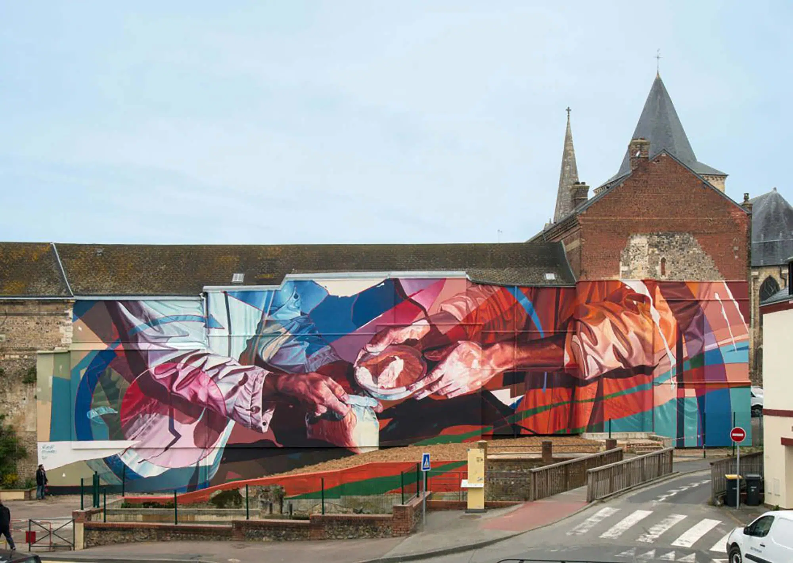
Texte court à remplacer.
Cliquez sur une figure pour ouvrir un parcours illustré, composé d’images et de textes à feuilleter.
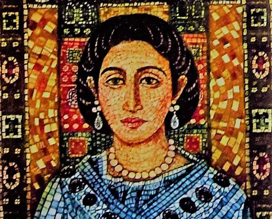
Ouvrir le carnet illustré.
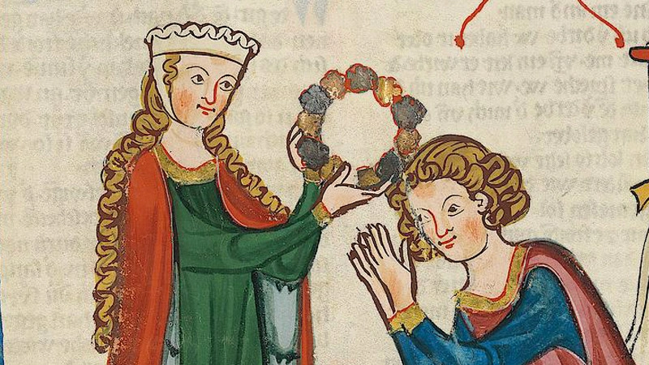
Ouvrir le carnet illustré.
Ouvrir le carnet illustré.

Ouvrir le carnet illustré.
Remplacez les identifiants YouTube dans les iframes ci-dessous. Format idéal : capsules courtes de 45 secondes à 2 minutes.
Cliquez sur une image pour l’ouvrir. Remplacez les visuels et légendes.
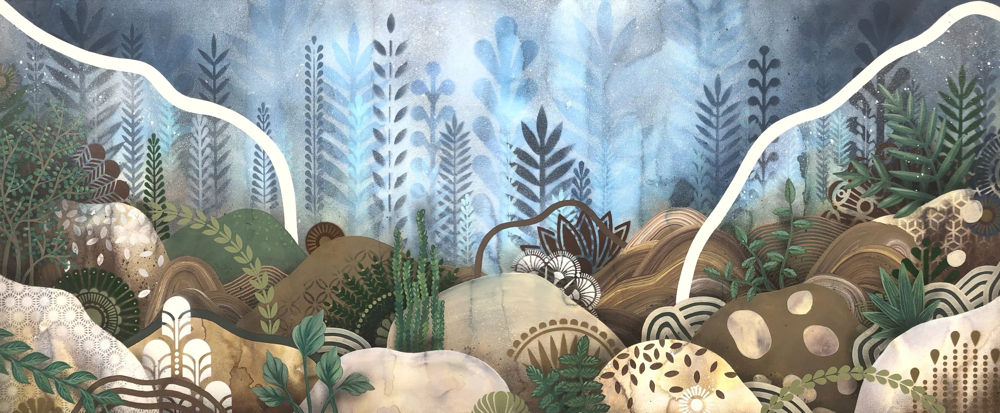
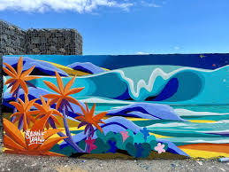

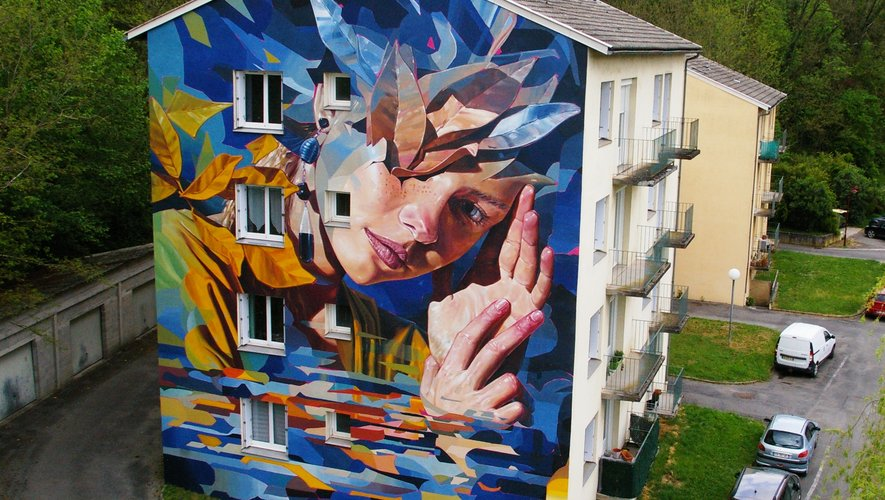
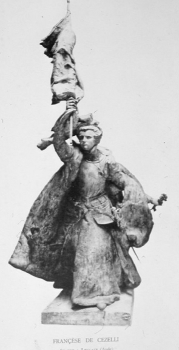

Cartes très courtes. À adapter selon votre angle de médiation.
Comment un visage change la perception d’un lieu public.
Une pratique qui dialogue avec l’espace urbain et ses usages.
Quand un projet se construit aussi avec les habitants.
Le lieu devient support de récit, de mémoire et de rencontre.
Une première couche ludique avec un quiz et un memory.